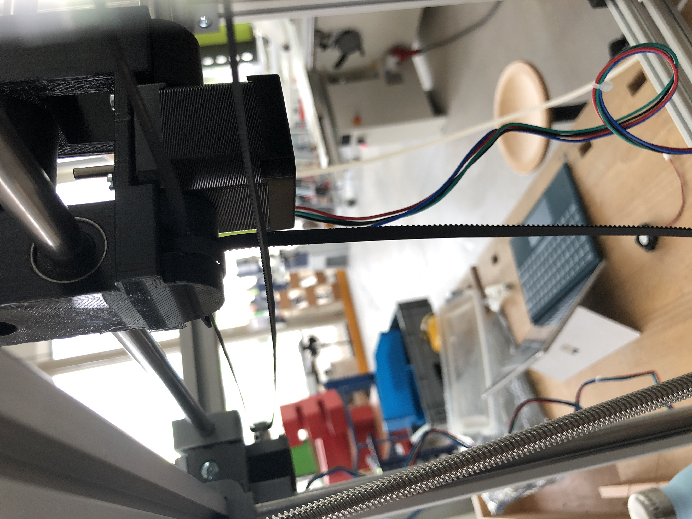
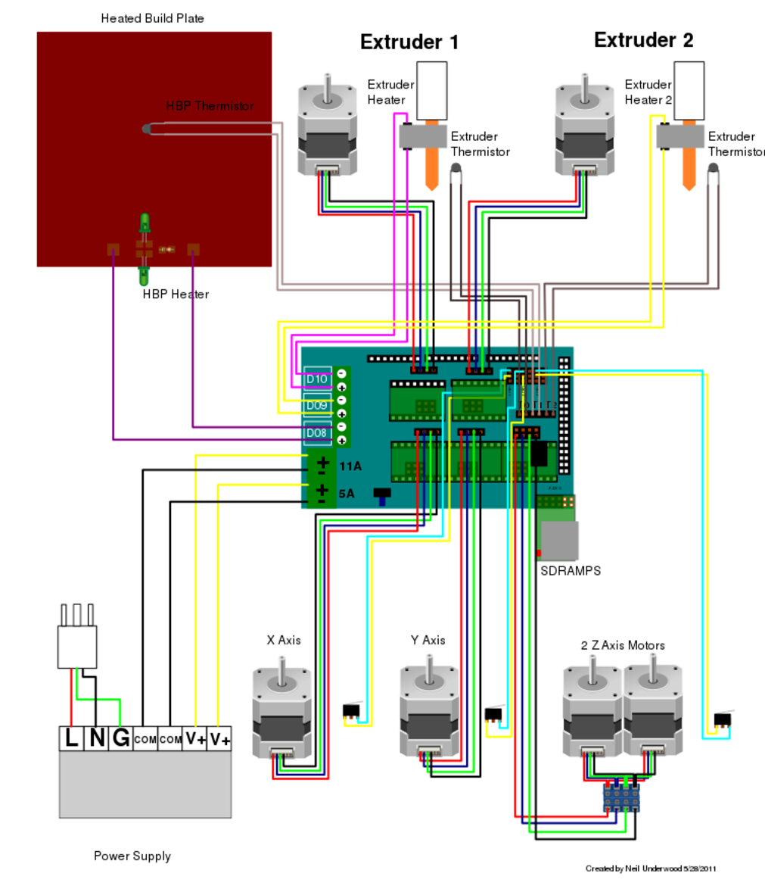

The Final ProjectAs my final project I want to build a 3D-Printer from scratch |
Learning outcomes
|
Have you?
|
the frame is made out of aluminum profiles with a size of 500*500mm
the printing bed should slide with 4 horizontal guides and 1 lead screw
on the x-axis I use 2 linear rods (horizontal parallel)
for the y-axis 2 linear rods (vertical parallel)
both axis slide with belts (3mm)
the extruder is a J-head with a bowden system (1,75mm)

|
|
all 8 edges should hold via a printed connector which is mounted on all 3 aluminum profiles (30*30mm) + 6*M6 flat-head screws & aluminum studs |
20% infill |

|
|
4 vertical hollow linear rods with a diameter of 16mm and a lenght of 550mm |
20% infill |

|
|
for the y-axis I use 2 horizontal linear rods (12mm) |
20% infill |
|
the bed is connected to 4 holder which slide on the vertical rods |
20% infill |
|
the treaded rod has a diameter of 6mm and is screwed in a holder which is connected to the 20*20mm aluminum profile of the bed holder. |
20% infill |
|
the mount for the extruder slides on 12mm linear rods with a distance of 270mm |
20% infill |
|  |
|
the stepper (Nema17) moves the belt (3mm) which is fixed on the mount of the extruder |
I bought a kit with an Arduino Mega + ramps + 5 modules A4988 + LCD Display
ebay-link|
the assembled parts of all electronics |

RepRap Arduino Mega Pololu Shield 1.4 source |
This design, to me, seemed quite good and also nearly all parts were done
BUT I had a few problems
|
the linear rods are not were even. So the bed could not slide very fine |
another problem which does not satisfy myself with the design is the little printing area, compared to the big size of the frame
240*380mm (nearly half of the frame),
which could definetely be improved by changing a few things: